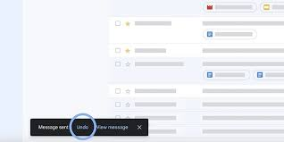

Oryginalna treść i tłumaczenie
EN: Users often perform actions by mistake. They need a clearly marked emergency exit to leave the unwanted action.
PL: Użytkownicy często wykonują działania przez pomyłkę. Powinni mieć możliwość łatwego cofnięcia lub anulowania działania.
Przykład ze strony internetowej

Źródło: PCMag – How to unsend an email in Gmail
Przykład z aplikacji mobilnej
Źródło: Apple Support – Recently deleted photos